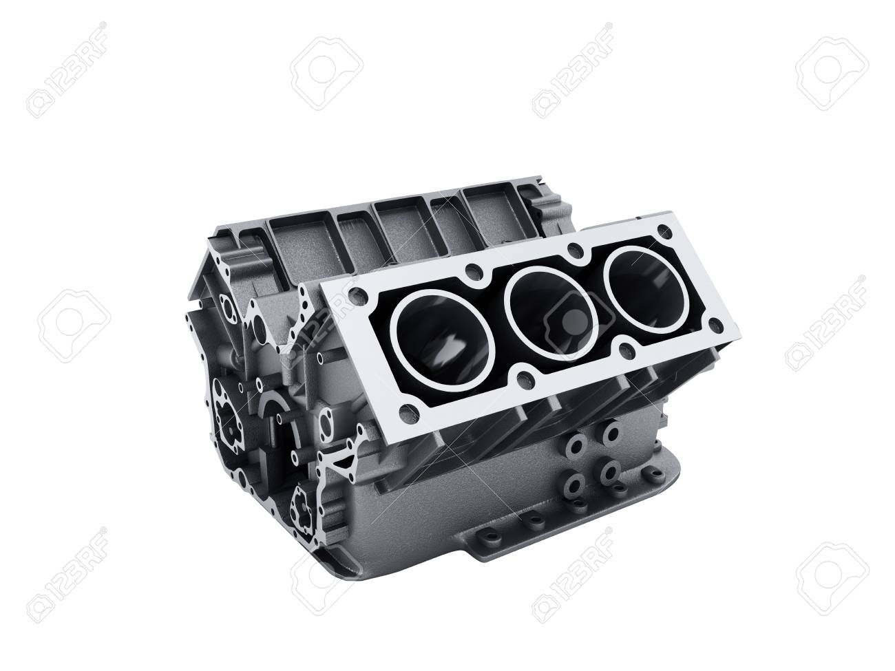
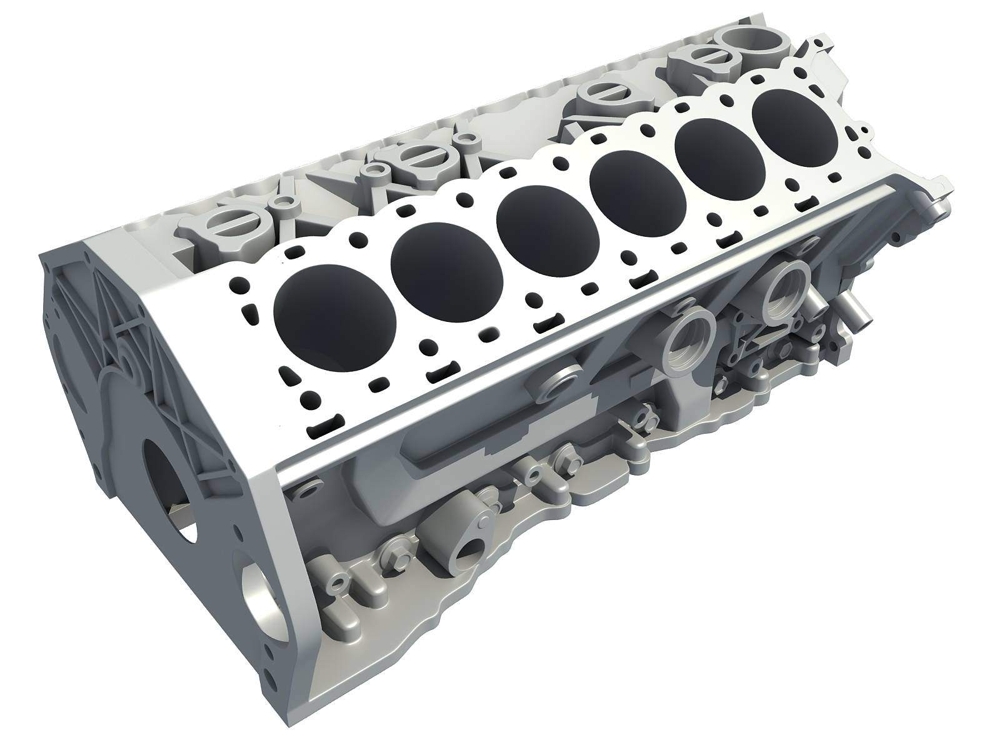
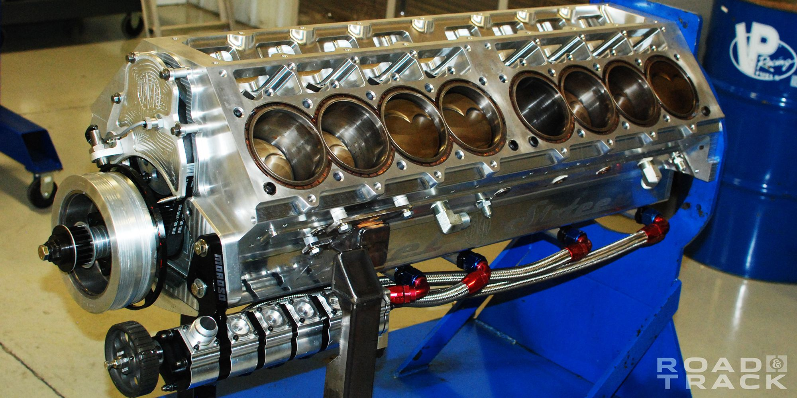

V class
V6

v8

V12

V16

An engine or motor is a machine designed to convert one form of energy into mechanical energy.
Heat engines convert heat into work via various thermodynamic processes. The internal combustion engine is perhaps the most common example of a heat engine, in which heat from the combustion of a fuel causes rapid pressurisation of the gaseous combustion products in the combustion chamber, causing them to expand and drive a piston, which turns a crankshaft. Electric motors convert electrical energy into mechanical motion, pneumatic motors use compressed air, and clockwork motors in wind-up toys use elastic energy.
In biological systems, molecular motors, like myosins in muscles, use chemical energy to create forces and ultimately motion.
Automobiles
The first commercially successful automobile, created by Karl Benz, added to the interest in light and powerful engines. The lightweight gasoline internal combustion engine, operating on a four-stroke Otto cycle, has been the most successful for light automobiles, while the more efficient Diesel engine is used for trucks and buses. However, in recent years, turbo Diesel engines have become increasingly popular, especially outside of the United States, even for quite small cars.
Engine configuration
Earlier automobile engine development produced a much larger range of engines than is in common use today. Engines have ranged from 1- to 16-cylinder designs with corresponding differences in overall size, weight, engine displacement, and cylinder bores. Four cylinders and power ratings from 19 to 120 hp (14 to 90 kW) were followed in a majority of the models. Several three-cylinder, two-stroke-cycle models were built while most engines had straight or in-line cylinders. There were several V-type models and horizontally opposed two- and four-cylinder makes too. Overhead camshafts were frequently employed. The smaller engines were commonly air-cooled and located at the rear of the vehicle; compression ratios were relatively low. The 1970s and 1980s saw an increased interest in improved fuel economy, which caused a return to smaller V-6 and four-cylinder layouts, with as many as five valves per cylinder to improve efficiency. The Bugatti Veyron 16.4 operates with a W16 engine, meaning that two V8 cylinder layouts are positioned next to each other to create the W shape sharing the same crankshaft. The largest internal combustion engine ever built is the Wärtsilä-Sulzer RTA96-C, a 14-cylinder, 2-stroke turbocharged diesel engine that was designed to power the Emma Mærsk, the largest container ship in the world when launched in 2006. This engine has a mass of 2,300 tonnes, and when running at 102 RPM (1.7 Hz) produces over 80 MW, and can use up to 250 tonnes of fuel per day
Air quality
Exhaust gas from a spark ignition engine consists of the following: nitrogen 70 to 75% (by volume), water vapor 10 to 12%, carbon dioxide 10 to 13.5%, hydrogen 0.5 to 2%, oxygen 0.2 to 2%, carbon monoxide: 0.1 to 6%, unburnt hydrocarbons and partial oxidation products (e.g. aldehydes) 0.5 to 1%, nitrogen monoxide 0.01 to 0.4%, nitrous oxide ppm, sulfur dioxide 15 to 60 ppm, traces of other compounds such as fuel additives and lubricants, also halogen and metallic compounds, and other particles.[22] Carbon monoxide is highly toxic, and can cause carbon monoxide poisoning, so it is important to avoid any build-up of the gas in a confined space. Catalytic converters can reduce toxic emissions, but not completely eliminate them. Also, resulting greenhouse gas emissions, chiefly carbon dioxide, from the widespread use of engines in the modern industrialized world is contributing to the global greenhouse effect – a primary concern regarding global warming.